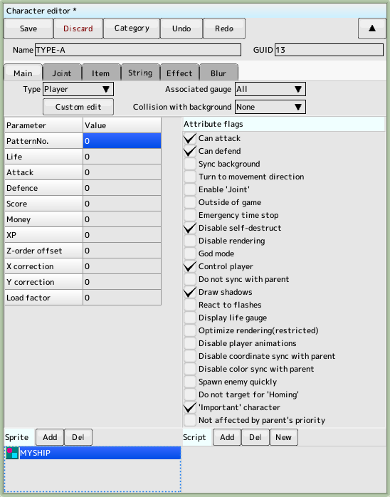
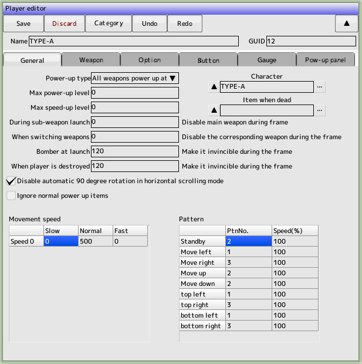
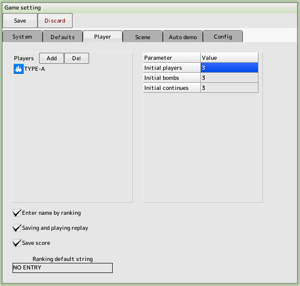
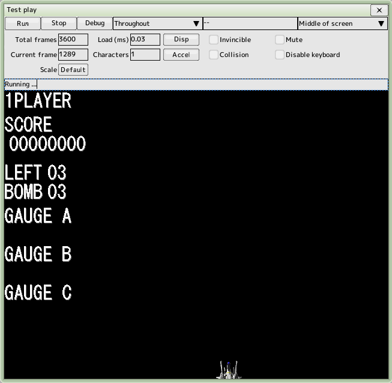

back to the original page
back to the original page
2. Create a player
Create your own machine (player) for human operation
It is also possible to create multiple players and have them selected at the beginning of the game
There are three parts required for a player: the player, the character, and the script
We will start by creating a character
Keep the project file created in the previous tutorial open

Create a character for the player
Click on the project's character and press the New button to create the character
Double-click the created character to open it and name it 'TYPE-A'

Enter your character's parameters
Type... My Machine
Attribute flags... Check as shown in the figure to the right
Parameters... Leave it all at 0
Sprite... Add the previously created sprite 'MYSHIP' by pressing the Add button
Script will be added later, so we don't need it this time
Adding the script will cause it to disappear when your plane is destroyed
Also, there is no need to touch any tabs other than the main tab

Enter the player's parameters
Click on a player in the project and press the New button to create a player
Name: 'TYPE-A'
Click on the character item... and select the character you just created, 'TYPE-A'
500
in the normal column of the movement speed settings
Enter the pattern number for each of the pattern settings
Change the pattern number depending on the direction of movement
Check the pattern number to open the sprite edit

Register the player in the game settings
Open the main menu "Settings" -> "Game Settings" and select the player tab
(Shortcut key is F8)
Click Add Player List to add the player 'TYPE-A' that you just created
Later, if you create more than one player, you will add them to the player list

Test Run
Select "Test" -> "Run" from the main menu to open the Test Play window
Automatic Start
(Shortcut key F5)
Press the Stop button (shortcut key F6) to stop
The player appears at the bottom of the screen, with the cursor keys or joypad
If you can move it up, down, left and right, you're done!
Now we will make the player's shot
Back to top of page